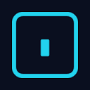

Conversation 853
Vector Glyphs Unknown Pokemon
Prompt 1 · You
vector glyphs unknown pokemon gold
Response 1 · Google AI Mode
In Pokémon Gold and Silver, the ancient glyphs found in the Ruins of Alph represent the Symbol Pokémon, Unown. Introduced in Generation II (1999), these hieroglyph-like characters form a one-to-one monoalphabetic substitution cipher based on the 26 letters of the Latin alphabet.  Wikipedia +2
Wikipedia +2
Wikipedia +2If you are looking to find these glyphs, decode their meaning, or look up their vector/sprite files, here is a complete breakdown of how they function in the game.
Unown Alphabet Structure
Each Unown glyph represents a letter from A through Z. (Note: The punctuation marks "?" and "!" were not introduced until Generation III, so they do not appear in the original Pokémon Gold).
StrategyWiki +2
In the game's Unown Mode (an expansion for your Pokédex), every letter is associated with a specific word:  Bulbapedia +1
Bulbapedia +1
Bulbapedia +1- Anger, Bear, Chase, Direct, Engage, Find, Give, Hapfast, Increase, Join, Keep, Laugh, Make, Nascent, Observe, Perform, Quicken, Reassure, Search, Tell, Undo, Vanish, Want, XXXXX, Yield, Zoom.
Unlocking the Glyphs (Puzzle Chambers)
To make all 26 variations appear wildly in the Ruins of Alph, you must travel to four separate chambers and solve their sliding block tile puzzles.
StrategyWiki
| Puzzle Chamber | Location / Requirements | Unlocks Glyphs |
|---|---|---|
| Kabuto Puzzle | Northeast chamber (accessible right away) | Letters A – K |
| Aerodactyl Puzzle | Southeast chamber (Requires Surf) | Letters S – W |
| Ho-Oh Puzzle | Northwest chamber via Union Cave (Requires Surf) | Letters X – Z |
| Omanyte Puzzle | Southwest chamber via Union Cave (Requires Surf & Strength) | Letters L – R |
Once you catch at least three different variations, a scientist at the Ruins of Alph Research Center will update your Pokédex with the Unown Mode to help you track all 26 shapes. Bulbapedia
BulbapediaSourcing Vector/Sprite Files
If you are looking for clean, digital vector graphics or high-resolution extractions of these original 1999 Game Boy Color glyphs for design or printing, you can find them across various community archives:
- Official Sprites: You can view the original pixel artwork and clean extracted game assets via the Bulbapedia Unown Symbols Page. Bulbapedia
- Pre-made Vectors: For scalable vector graphics (.SVG or .EPS formats) of the alphabet, check digital design platforms or fan-made bundles like the Etsy Pokémon Sprite Bundles which feature vectorized 8-bit generation assets.
- Translators: If you want to convert standard text into Unown glyph formatting, you can use online translation tools such as the Cipher Chronicle Unown Translator.

www.cipherchronicle.com
Are you looking for the vector glyphs to use in a design project or font file, or are you trying to solve a specific hidden text puzzle inside the game? Let me know and I can guide you further!
Source links preserved from this response
- bulbapedia.bulbagarden.net
https://bulbapedia.bulbagarden.net/wiki/Unown_symbols - en.wikipedia.org
https://en.wikipedia.org/wiki/Unown - strategywiki.org
https://strategywiki.org/wiki/Pok%C3%A9mon_Gold_and_Silver/Unown_Dex - bulbapedia.bulbagarden.net
https://bulbapedia.bulbagarden.net/wiki/Unown_Mode - Etsy Pokémon Sprite Bundles
https://www.etsy.com/listing/4360888045/10025-pokemon-vector-bundle-8-bit - www.cipherchronicle.com
https://www.cipherchronicle.com/en/methods/unown
Prompt 2 · You
Ik Tom Klootwijk NL200678942 10-07-1990 NIJNTJE10DOOH RICH annagram los het op
Response 2 · Google AI Mode
De letters uit de reeks NIJNTJE10DOOH RICH kunnen op verschillende manieren worden opgelost of ontcijferd, afhankelijk van hoe de cijfers en letters worden gegroepeerd.
Hier zijn de twee meest logische ontcijferingen van dit anagram:
1. De letterlijke anagram-oplossing (Nederlands)
Als we alle beschikbare letters en cijfers combineren tot een herkenbare zin, vormen ze de volgende woordcombinatie:
- "NIJNTJE RICHT 10 OOH" of "NIJNTJE RICHT OOH 10"
2. De omkeer- / spiegelmethode (Visueel anagram)
Wanneer je specifiek naar het tweede gedeelte kijkt, valt op dat een deel van de tekst simpelweg achterstevoren (gespiegeld) staat geschreven:
- NIJNTJE 10 (blijft normaal staan)
- DOOH RICH achterstevoren gespeld is: HCIR HOOD (ofwel RICH HOOD)
Samengevoegd levert dit de term "NIJNTJE 10 RICH HOOD" op.